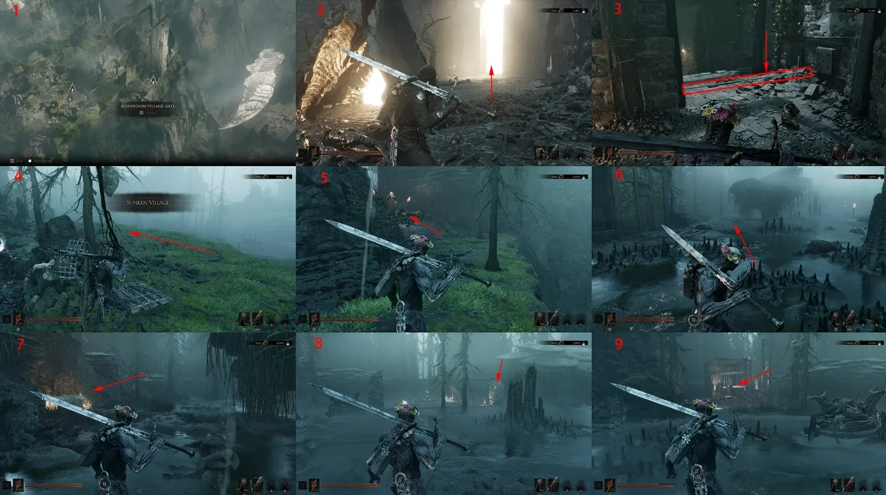
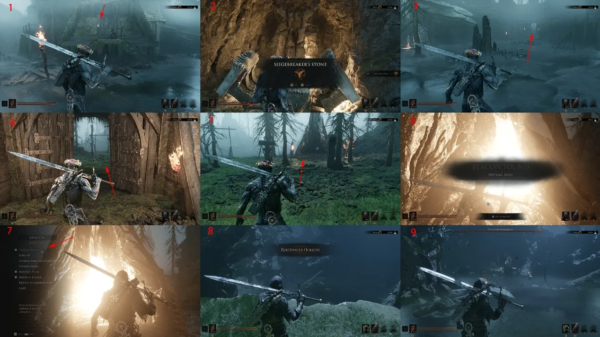
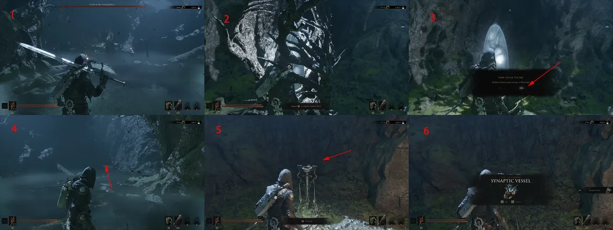
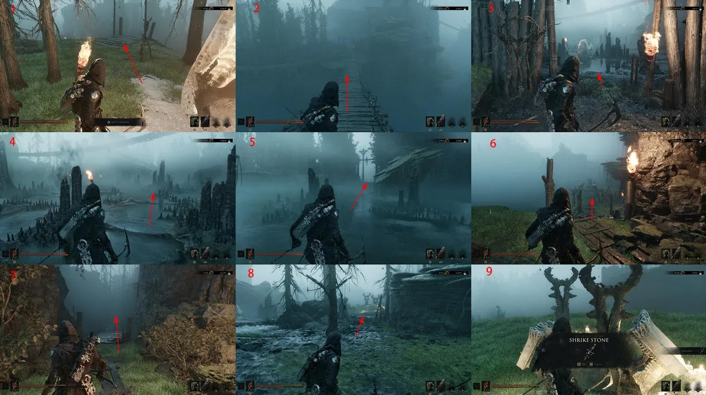
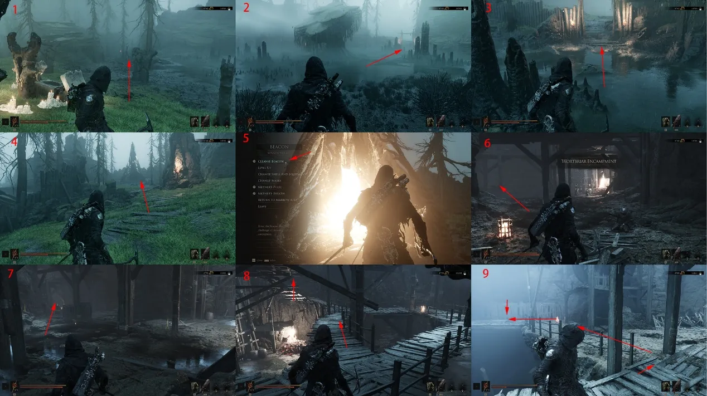
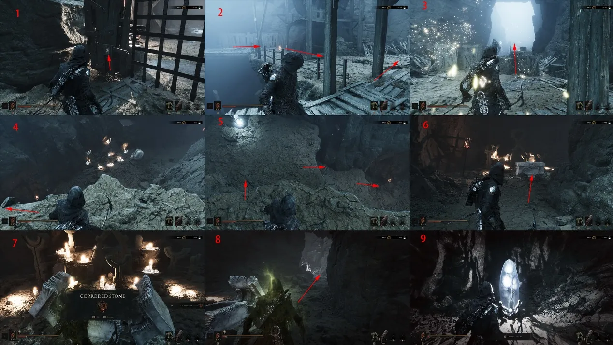
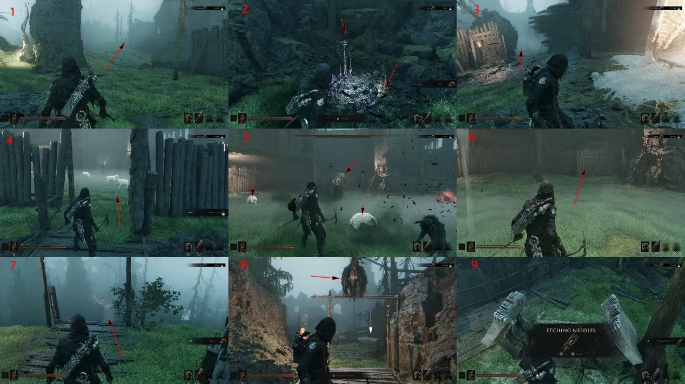
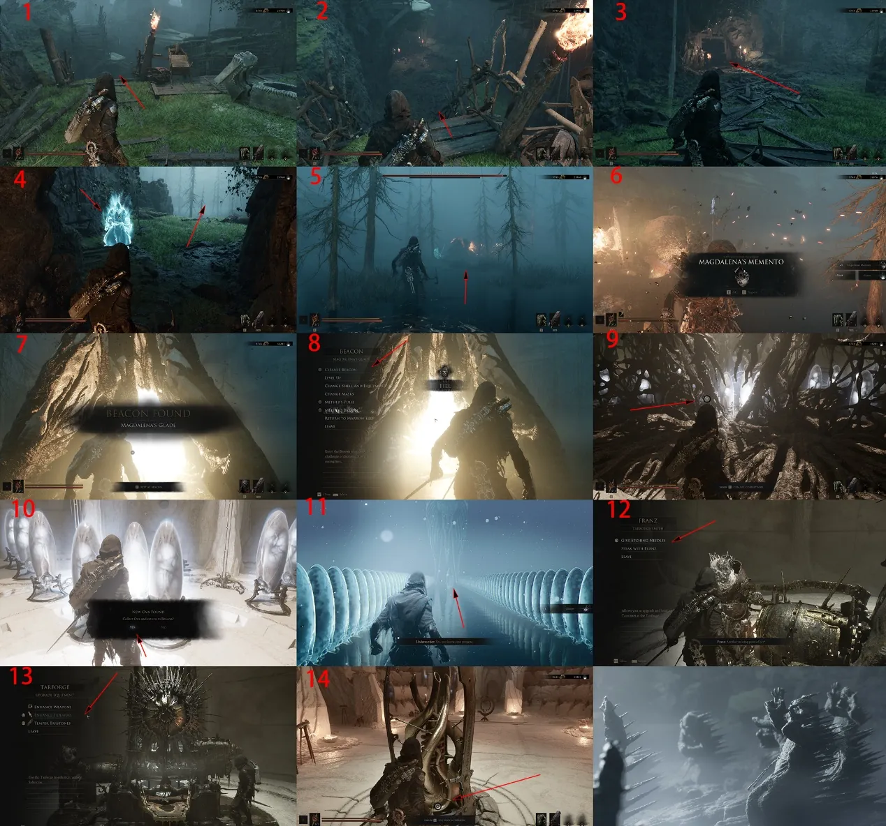

The final currently documented route: avoid the crossbow traps, purify both Beacons, unlock Shell Call and return the Sacred Egg to Marrow Keep.
Start
Mushroom Village Gate
Key unlock
Shell Call
Return
Marrow Keep

Route 01Pass through the glowing gate at Mushroom Village Gate Beacon to enter the next region. Watch for the crossbow traps on the road, clear the gate enemies and enter the village from the left.

Route 02Clear the village and open its locked Make Offering Treasure for the Formation-Breaking Stone. Leave by the marked gate, unlock the Leaking Pool Bog Beacon, purify it and reach the Ring of Grasping Roots encounter.

Route 03After purifying the corruption, do not return to the surface immediately. Follow the arrow inside the Beacon to collect the Synaptic Vessel, then take the Sacred Egg back up.

Route 04Cross the front suspension bridge, clear the area and take 350 Tar nearby. Follow the right cliff down, cross the next bridge and defeat the two elite enemies. The Treasure among the statues contains the Shrike Stone.

Route 05Return to the previous area, clear any remaining enemies and use the marked door. Climb to the Fallen Village Beacon, purify it and take the left elevator down.

Route 06Strike the nearby object for Ectoplasm and use the pressure plate left of the door. Ride up, clear the next enemies, drop from the cliff to the lower rock and open the Treasure for the Corrosion Stone. Purify the corruption and bring the Egg back.

Route 07From the Beacon, take the marked route for a Titan's Gland and 350 Tar. After resting, the left area leads to the Wandering Shepherd, which rewards the Sheephead Totem. Break the crate by the wooden door, crawl through and use Rook's Treasure for the Etched Needle.

Route 08Drop left into the cave and unlock Shell Call. Continue down to Lady Magdalena of the Woods for Magdalena's Token. Purify the final Beacon, return the Sacred Egg to Marrow Keep, strengthen your Shell with Zhirelle and give Franz the Etched Needle to upgrade the Tarforge.